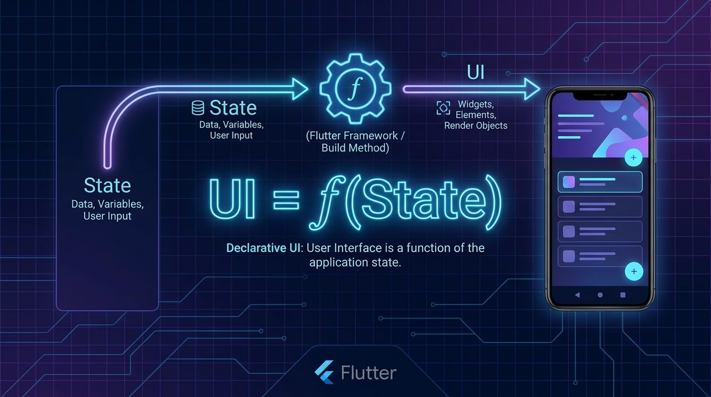
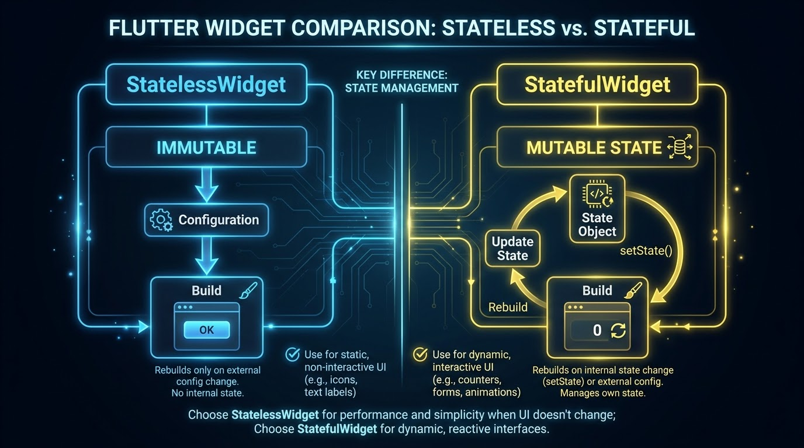

ในสัปดาห์นี้เราจะพักจากการเขียนโค้ดฝั่งหน้าบ้าน Flutter ชั่วคราว เพื่อร่วมกันวางโครงร่าง REST API Backend ดึงข้อมูลทริปเดินทางจำลอง และออกแบบระบบรักษาความปลอดภัยแบบไร้สถานะ (Stateless Authentication) โดยใช้ระบบ Token ร่วมกับ Django REST Framework (DRF).
ระบบยืนยันตัวตนที่เราจะพัฒนาสอดคล้องกับแนวปฏิบัติด้านความปลอดภัยของ OWASP และสถาปัตยกรรมระดับ Production
เซิร์ฟเวอร์จะสร้างเซสชันเก็บไว้ในหน่วยความจำ/ฐานข้อมูล และส่ง Session ID ไปกักเก็บไว้ในเบราว์เซอร์ผ่านคุกกี้.
เซิร์ฟเวอร์ตรวจสอบบัญชีสำเร็จแล้วจะส่ง JSON Web Token (JWT) กลับไปให้ไคลเอนต์เก็บไว้ และเซิร์ฟเวอร์จะไม่เก็บสถานะล็อกอินใดๆ ไว้ในฝั่งหลังบ้านเลย.
💡 คำแนะนำเชิงระบบ: "อะไรสเกลได้ดีกว่าในระยะยาว?" นี่คือโจทย์ที่แยกสถาปัตยกรรมระดับโปรดักชันออกจากโปรเจกต์ระดับเริ่มต้น. การใช้ Token ช่วยแก้ปัญหานี้ให้แอปพลิเคชันอย่าง Compass App.
ในสภาพแวดล้อมสถาปัตยกรรมระดับ Production การสื่อสารระบบจะเดินทางแบบทิศทางเดียว (Unidirectional Flow) และการแกะข้อมูลเพื่อสกัดบัญชีทำงานจะเป็นไปตามลำดับชั้นอย่างเป็นระเบียบ:
Authorization: Bearer <token>
ก่อนเริ่มต้นเขียนระบบฐานข้อมูลหลังบ้าน เรามาตรวจสอบเครื่องมือและสร้างสภาพแวดล้อมจำลอง (Virtual Environment) สำหรับพัฒนาโปรเจกต์ Django ของเราให้เรียบร้อยกันก่อน:
# 1. ตรวจสอบเวอร์ชัน Python (ต้องการ 3.8+)
$ python --version
# 2. สร้าง Virtual Environment และเปิดใช้งาน
$ python -m venv venv
$ source venv/bin/activate # สำหรับ Windows: venv\Scripts\activate
# 3. ติดตั้ง Django, DRF, djangorestframework-simplejwt, และ CORS-headers
$ pip install django djangorestframework djangorestframework-simplejwt django-cors-headers
Serializers มีบทบาทสำคัญในการเชื่อมโครงสร้างข้อมูลฝั่ง Backend และแอป Flutter โดยจะทำหน้าที่แปลงอ็อบเจกต์ฐานข้อมูล (Models) เป็นข้อความดิบชนิด JSON และในทางกลับกันก็ช่วยตรวจสอบความปลอดภัยข้อมูลที่ไคลเอนต์ยิงขึ้นมาจัดเก็บด้วย:
# app/serializers.py
from rest_framework import serializers
from django.contrib.auth.models import User
from .models import Booking
class BookingSerializer(serializers.ModelSerializer):
class Meta:
model = Booking
fields = ['id', 'destination_name', 'start_date', 'end_date', 'price']
# custom serializer สำหรับล็อกอินเพื่อส่งกลับ Custom Token Claims
from rest_framework_simplejwt.serializers import TokenObtainPairSerializer
class MyTokenObtainPairSerializer(TokenObtainPairSerializer):
@classmethod
def get_token(cls, user):
token = super().get_token(user)
# เพิ่ม Custom Claim ลงใน Token
token['name'] = user.username
return token
ในการเชื่อมระบบยืนยันตัวตน simple_jwt เราต้องประกาศเส้นทางการออก Token คู่สิทธิ์ล็อกอินและจุดเชื่อมต่อขออัปเดตสิทธิ์ (Token Refresh) ลงในระบบ URL Routing ของแอปหลังบ้าน:
# config/urls.py
from django.urls import path, include
from rest_framework_simplejwt.views import (
TokenObtainPairView,
TokenRefreshView,
)
urlpatterns = [
path('api/token/', TokenObtainPairView.as_view(), name='token_obtain_pair'),
path('api/token/refresh/', TokenRefreshView.as_view(), name='token_refresh'),
path('api/', include('app.urls')),
]
เขียนโค้ดเพื่อคุ้มครองช่องทางเรียกดูข้อมูลด้วยสิทธิ์ IsAuthenticated เพื่อสกัดกั้นผู้ใช้งานภายนอกที่ไม่ได้ผ่านกระบวนการตรวจสอบสิทธิ์:
# app/views.py (Protected API)
from rest_framework.views import APIView
from rest_framework.response import Response
from rest_framework.permissions import IsAuthenticated
class BookingListView(APIView):
permission_classes = (IsAuthenticated, )
def get(self, request):
content = {
'bookings': [{'id': 1, 'destination_name': 'Tokyo', 'price': 35000.0}]
}
return Response(content)
# 🧪 ทดสอบยิง API เพื่อขอรับคู่ Token
$ curl -X POST -H "Content-Type: application/json" -d '{"username":"student", "password":"password123"}' http://localhost:8000/api/token/
# 🧪 ทดสอบดึงข้อมูลทริปการท่องเที่ยว (ส่ง Token)
$ curl -H "Authorization: Bearer <access_token>" http://localhost:8000/api/bookings/
ตามมาตรฐาน RFC 7519 ตัวโครงสร้างของ JSON Web Token (JWT) จะเป็นสายข้อความกะทัดรัดและปลอดภัยในการส่งผ่าน URL (URL-safe string) ประกอบขึ้นจากการแปลงข้อมูลแบบ Base64url จำนวน 3 ส่วนหลักคั่นด้วยเครื่องหมายจุด (.) :
Header (ส่วนหัว): บอกประเภทของ Token และอัลกอริทึมที่ใช้เข้าลายเซ็นคริปโทกราฟี (เช่น HS256 หรือ RS256) .
Payload (ส่วนข้อมูล): บรรจุชุดข้อมูลเรียกว่า Claims เกี่ยวกับผู้ใช้งานที่ระบุตัวตนและวันเวลาหมดอายุสิทธิ์ .
Signature (ส่วนลายเซ็น): ใช้สิทธิ์ตรวจสอบข้อมูลดิบฝั่งหลังบ้านเพื่อป้องกันภัยคุกคามจากการแก้ไขตัวเลขClaimsระหว่างทาง .
มาตรฐาน **RFC 7519** ได้กำหนดชุดข้อมูลระบุตัวตนและอายุการใช้งานของ Token ที่เป็นสากลและเป็นทางเลือก (Optional แต่แนะนำสำหรับระบบส่งต่อสิทธิ์ร่วมกัน) ไว้ดังนี้ :
`iss` (Issuer): ระบุเซิร์ฟเวอร์ผู้ทำการออกสิทธิ์ Token นี้
`sub` (Subject): ข้อมูลประจำตัวผู้ใช้งานเพื่อตรวจสอบยืนยันบัญชี (เช่น User ID)
`aud` (Audience): ระบุกลุ่มผู้รับหรือเครื่องปลายทางที่ Token นี้ตั้งเป้าหมายไว้
`exp` (Expiration Time): วันหมดอายุของรหัส Token ห้ามใช้ประมวลผลหลังเวลานี้
`iat` (Issued At): ระบุเวลาที่จัดสร้างและออกสิทธิ์ Token นี้ขึ้นมา
`jti` (JWT ID): รหัสจำเพาะสุ่ม (Unique ID) สำหรับสกัดการโจมตีนำสิทธิ์เก่ามารันซ้ำ
นอกเหนือจาก Claims มาตรฐานแล้ว นักศึกษาสามารถออกแบบเสริมคุณลักษณะเฉพาะงาน (Custom Claims) เช่น ชื่อผู้ใช้ (name) หรือสิทธิ์หน้าที่เข้าถึง (role) ลงในก้อน Payload ได้โดยตรงเพื่อใช้กรองสิทธิ์แสดงหน้าจอฝั่ง Flutter ได้ทันทีโดยไม่ต้องยิงดึงข้อมูลจาก API ซ้ำซ้อน .
| คุณลักษณะ | HS256 (Symmetric) | RS256 (Asymmetric) |
|---|---|---|
| กุญแจที่ใช้ | ใช้กุญแจลับร่วมกันแชร์คีย์เดี่ยว (Symmetric Shared Secret) | กุญแจคู่: ส่วนตัวสำหรับออกสิทธิ์ (Private) และส่วนตัวสาธารณะใช้แกะคีย์ (Public) |
| ระดับความปลอดภัย | เสี่ยงต่อการรั่วไหลสูง หากเซิร์ฟเวอร์อื่นโดนเข้าถึงรหัสลับ | ปลอดภัยสูงมาก: ปลายทางผู้ตรวจสอบตรวจสอบผ่านค่า Public JWK เท่านั้น |
| การแชร์คีย์ | ต้องส่งมอบคีย์ความลับผ่านช่องทางเชื่อมโยงเสี่ยงดักจับ | เผยแพร่กุญแจยืนยันด้วยความเสถียรผ่านทางพอร์ตเว็บบอร์ด /.well-known/jwks.json |
เมื่อติดตั้งคลังโปรแกรมสำเร็จแล้ว ให้นำคลาสตรวจสอบยืนยันสิทธิ์ JWTAuthentication ไปกำหนดเข้าสู่ระบบตรวจสอบสิทธิ์กลางของโปรเจกต์ Django REST Framework ในไฟลตั้งค่าหลัก :
# config/settings.py
REST_FRAMEWORK = {
'DEFAULT_AUTHENTICATION_CLASSES': (
'rest_framework_simplejwt.authentication.JWTAuthentication',
),
}
🎯 หลักการทำงาน: ระบบ DRF จะประมวลผลคำขอขาเข้าจากแอป Flutter โดยอัตโนมัติ โดยการถอดลายเซ็นตรวจสอบสิทธิ์ใน HTTP Authorization header หากระบบแกะลายเซ็นและถอดคีย์ JWT สำเร็จ จะผูกอ็อบเจกต์บัญชีผู้ใช้เข้ากับตัวแปร request.user ให้กับ API View ทันที .
การเชื่อมต่อสิทธิ์ความปลอดภัยในระบบ Simple JWT คอนฟิกสำเร็จรูปผ่านวิวยิงสำเร็จ ได้แก่ TokenObtainPairView สำหรับใช้เป็นด่านแรกในการล็อกอิน และ TokenRefreshView สำหรับใช้เรียกขอรับคู่สิทธิ์เข้าทำงานชุดใหม่ :
# config/urls.py
from django.urls import path
from rest_framework_simplejwt.views import (
TokenObtainPairView,
TokenRefreshView,
)
urlpatterns = [
# เส้นทางล็อกอินเพื่อขอรับ Access + Refresh Token
path('api/token/', TokenObtainPairView.as_view(), name='token_obtain_pair'),
# เส้นทางสำหรับยิงเพื่อขอรับ Access Token รอบสิทธิ์อัปเกรดใหม่
path('api/token/refresh/', TokenRefreshView.as_view(), name='token_refresh'),
]
หากต้องการเขียนโปรแกรมดึงข้อมูลเพื่อฝังคุณสมบัติลงสู่ก้อน Token ให้สร้างคลาสย่อย (Subclass) สืบทอดความสามารถมาจาก TokenObtainPairSerializer และทำซ้ำ (Override) เมธอด get_token ดังนี้ :
# app/serializers.py
from rest_framework_simplejwt.serializers import TokenObtainPairSerializer
class MyTokenObtainPairSerializer(TokenObtainPairSerializer):
@classmethod
def get_token(cls, user):
token = super().get_token(user)
# ปรับแต่ง: แทรกชื่อและอีเมลผู้ใช้ลงใน Payload
token['username'] = user.username
token['email'] = user.email
return token
เมื่อพัฒนาเสร็จสิ้น ให้นำตัวแปรคลาสนี้ระบุลงในพจนานุกรม TOKEN_OBTAIN_SERIALIZER ภายใต้ไดเรกทอรี settings.py ของโปรเจกต์ Django หลังบ้านเพื่อเปิดใช้งานจริงแทนคลาสสถิติเดิมของระบบ [12].
ในระบบ Simple JWT เราสามารถควบคุมระยะเวลาความสมบูรณ์และพฤติกรรมความปลอดภัยได้อย่างอิสระ ผ่านการกำหนดตัวแปรโครงข่าย SIMPLE_JWT พจนานุกรมการอัปเดตดังต่อไปนี้ [9]:
# config/settings.py (SIMPLE_JWT Dict)
from datetime import timedelta
SIMPLE_JWT = {
'ACCESS_TOKEN_LIFETIME': timedelta(minutes=15),
'REFRESH_TOKEN_LIFETIME': timedelta(days=7),
'ROTATE_REFRESH_TOKENS': True,
'BLACKLIST_AFTER_ROTATION': True,
}
ในแพลตฟอร์มยุคก่อนหน้า (Imperative UI) เรามักเขียนโค้ดเพื่อคอยปรับเปลี่ยนหน้าจอทีละส่วน เช่น view.setText() แต่ใน Flutter เราใช้สถาปัตยกรรมแบบ **Declarative UI** ซึ่งหมายความว่า **UI หน้าจอจะถูกวาดขึ้นมาใหม่ทั้งหมดจากข้อมูลสถานะ (State) ล่าสุด** เสมอ [1]:
f(State) = UI

ในการเรียนรู้สัปดาห์ที่ 2 นักศึกษาจะต้องทำความเข้าใจข้อแตกต่างและขีดความสามารถการจัดวางโครงข่ายสถานะระหว่างสองวิดเจ็ตหลักดังต่อไปนี้ [2]:
วิดเจ็ตประเภท **Immutable** ที่ข้อมูลคุณสมบัติคงที่ ไม่สามารถเปลี่ยนแปลงค่าได้ในตัวเองหลังจากสร้างขึ้นแล้ว เหมาะสำหรับทำหน้าปก ป้ายข้อความทั่วไป หรือปุ่มกดที่ไม่ต้องการสลับสถานะ [2]
วิดเจ็ตพิเศษที่สามารถ **จดจำและอัปเดตสถานะของตัวเอง** ตลอดช่วงเวลาที่ปรากฏบนหน้าจอได้ ทำงานร่วมกับคลาสคู่หูคือ `State` ในการสั่งระบายสีวาดหน้าจอใหม่เมื่อตรวจพบว่าข้อมูลเกิดการเปลี่ยนสลับไปจากเดิม [2]
การเขียนวิดเจ็ตที่มีการเชื่อมโยงระบบหลังบ้านหรือกล้องถ่ายภาพ นักศึกษาจำเป็นต้องจดจำ **วงจรชีวิต (Lifecycle)** ของวิดเจ็ตให้ดี เพื่อให้สามารถเรียกอ่านหรือทำลายล้างหน่วยความจำได้อย่างปลอดภัยสูงสุด:
เปิดระบบและพิมพ์โค้ดวิดเจ็ตแบบมีสถานะ (StatefulWidget) ต่อไปนี้ เพื่อทดลองสั่งเรียกใช้งานคำสั่งล้ำค่า setState() ในการบังคับให้เฟรมเวิร์กวาดภาพหน้าจอใหม่เมื่อเกิดการคลิก [2]:
// lib/counter_widget.dart
class MyCounter extends StatefulWidget {
const MyCounter({super.key});
@override
State<MyCounter> createState() => _MyCounterState();
}
class _MyCounterState extends State<MyCounter> {
int _count = 0; // ตัวแปรสถานะภายในแอป
@override
Widget build(BuildContext context) {
return Column(
children: [
Text('กดไปแล้ว: $_count ครั้ง', style: const TextStyle(fontSize: 20)),
ElevatedButton(
onPressed: () {
setState(() {
_count++; // เพิ่มจำนวนพร้อมสั่งระบายสีหน้าจอใหม่ทั้งหมด
});
},
child: const Text('บวกจำนวนนับ'),
),
],
);
}
}
สุดยอดมากครับ! ในวันนี้นักศึกษาทุกคนได้เรียนรู้และลงมือรันเขียนโปรแกรมจัดการโฟกัสความสัมพันธ์เชิง Layout, เปรียบเทียบ Stateless/Stateful Widgets และใช้งานคำสั่ง setState() ควบคุมการวาดโครงสร้างหน้าจอดั่งใจคิดได้เรียบร้อยแล้ว [2]